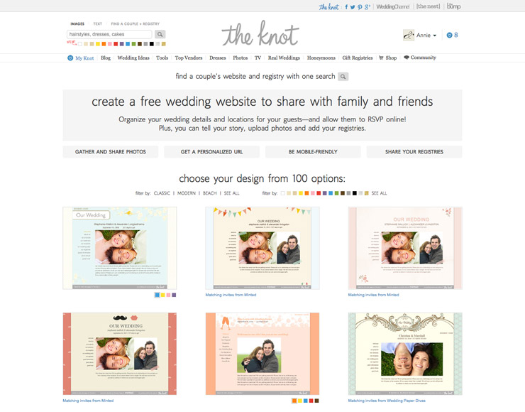
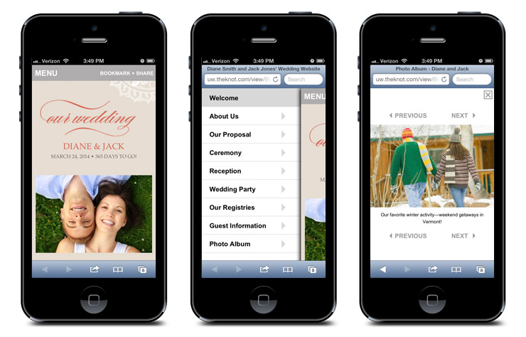

Wedding Websites
For about year and a half, I was the lead designer for TheKnot.com and WeddingChannel.com's wedding website offerings. Projects included redesigning TheKnot.com's Choose a Design page, working with our developers to create mobile versions of our wedding websites, and coordinating with external partners and our in-house tech team to build out new designs.
 